Выручка, план-факт, фудкост и потери всех точек сети — в одном окне.
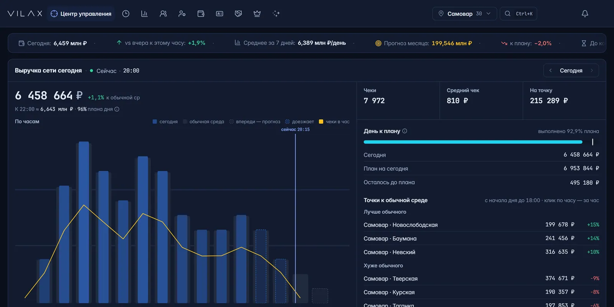
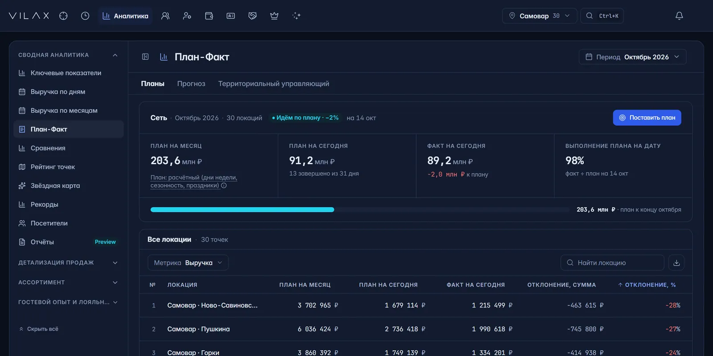
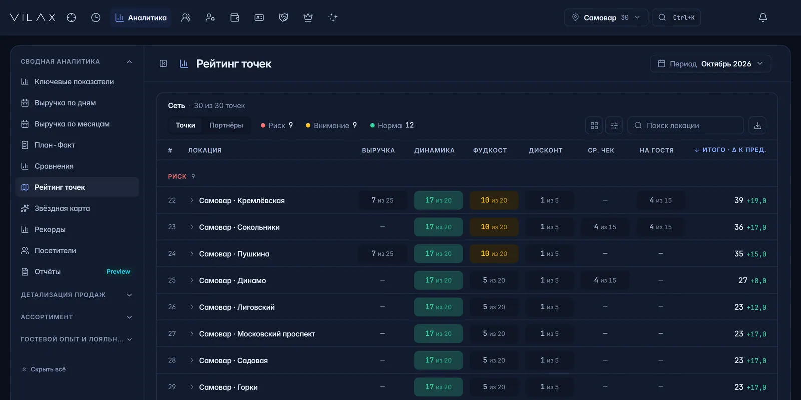
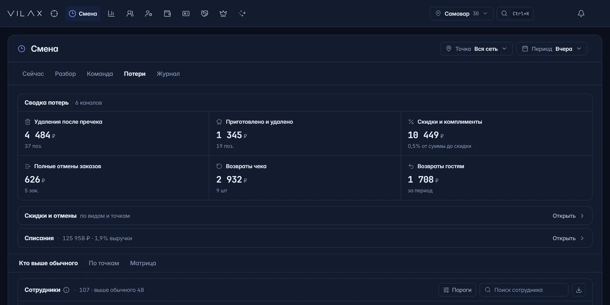
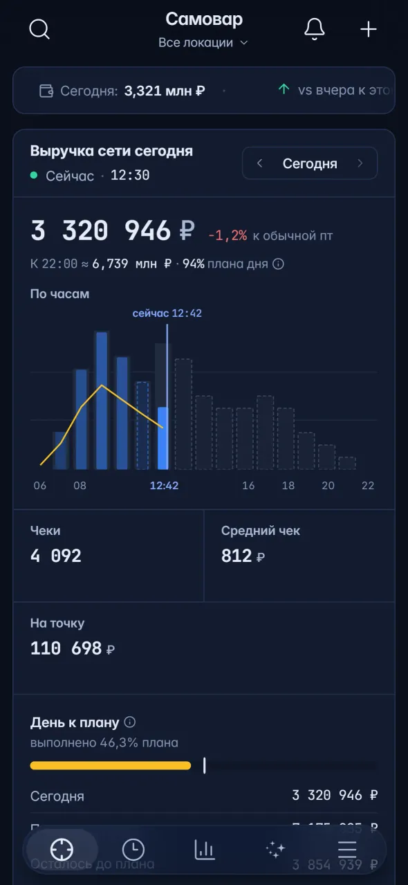
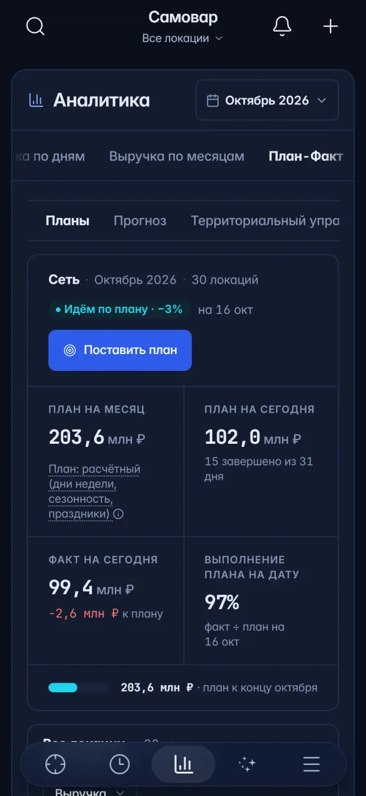
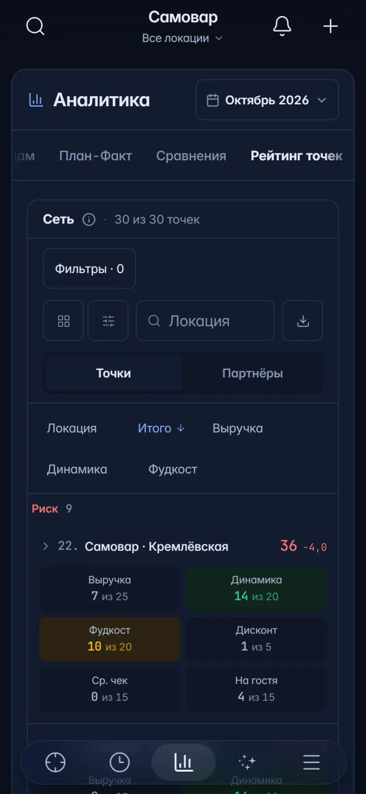
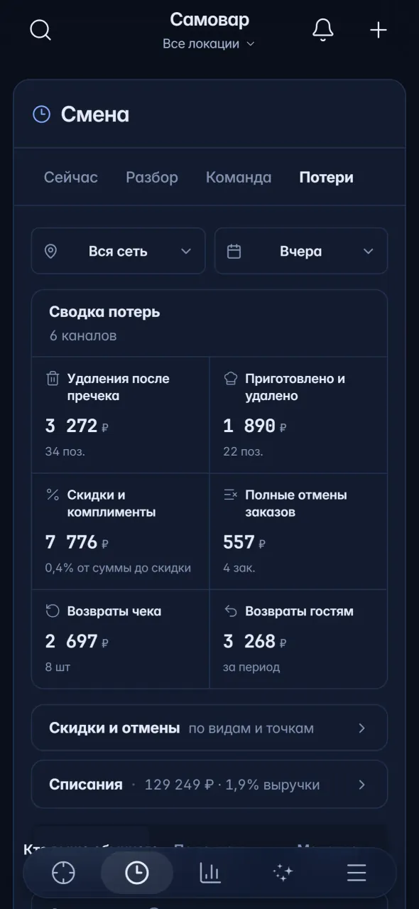
Так сетью управляют сегодня.
Данные есть в кассе, в учёте и в таблицах — но не в одном месте. Поэтому решения принимаются с опозданием.
Выручку узнаёте вечером — из чата управляющих
Отставание от плана видно, когда месяц уже не спасти.
Фудкост — в конце месяца из iiko, если повезёт дождаться отчёта
Какая точка и какие блюда съедают маржу, считают вручную.
Удаления после пречека не видит никто
Отмены, возвраты, скидки и списания теряются между сменами.
Ответы разбросаны по чатам, таблицам и отчётам.
VILAX собирает их в одно окно.
Понимать, где ресторан зарабатывает и теряет.
Основа показывает выручку, план-факт и рейтинг точек каждый день. Блок «Финансы и контроль» добавляет P&L, фудкост, меню и потери. Ниже — настоящие экраны на демо-сети.
Выручка и чеки в течение дня
Выручка сети по часам с прогнозом к закрытию дня и сравнением с обычным таким же днём.
открыть экран целиком ↗План-факт
План на каждый день с учётом дней недели и сезонности, отставание и прогноз закрытия месяца по каждой точке.
открыть экран целиком ↗Рейтинг точек
Точки по зонам «норма», «внимание», «риск»: выручка, динамика, фудкост, скидки и средний чек.
открыть экран целиком ↗Разбор смены
Вчерашняя смена против плана, обычного дня и потенциала при обычной выручке на гостя.
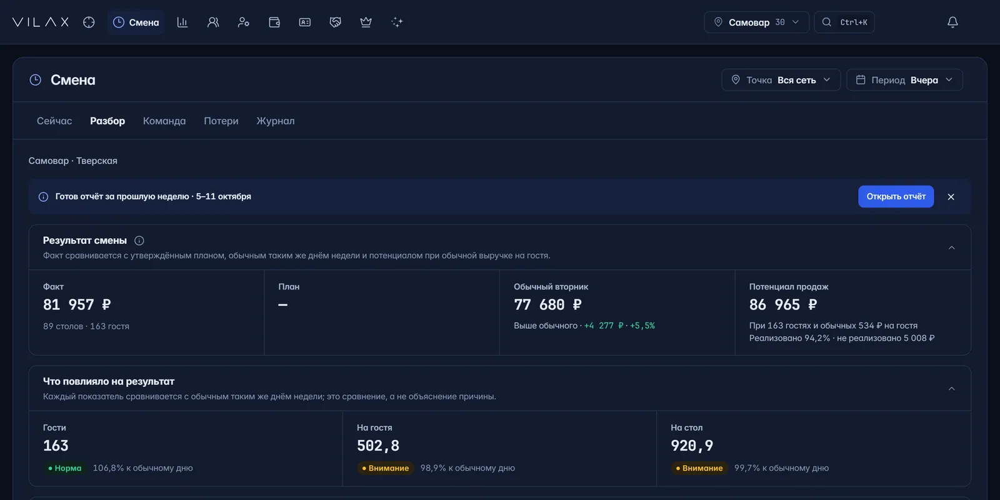
открыть экран целиком ↗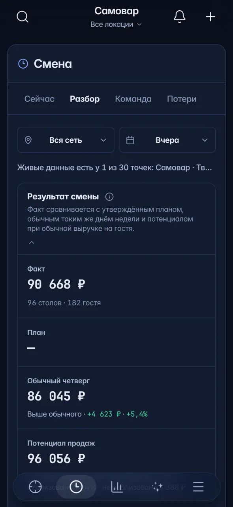
Потери по шести каналам
Удаления после пречека, отмены, возвраты, скидки и списания — с разбором по сотрудникам.
открыть экран целиком ↗P&L и движение денег
Отчёт о прибылях и убытках по сети и по каждой точке за неделю, месяц или квартал.
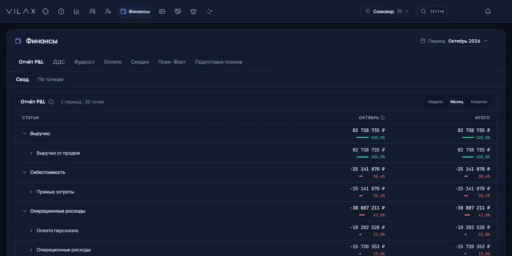
открыть экран целиком ↗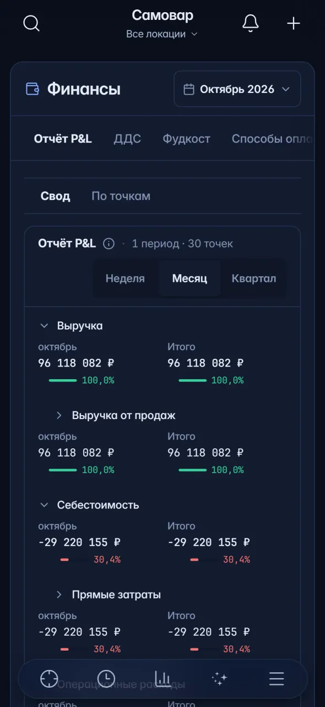
Матрица меню и фудкост
Блюда по продажам и марже: что продвигать, что пересчитать, что убрать. Фудкост по группам меню против нормы сети.
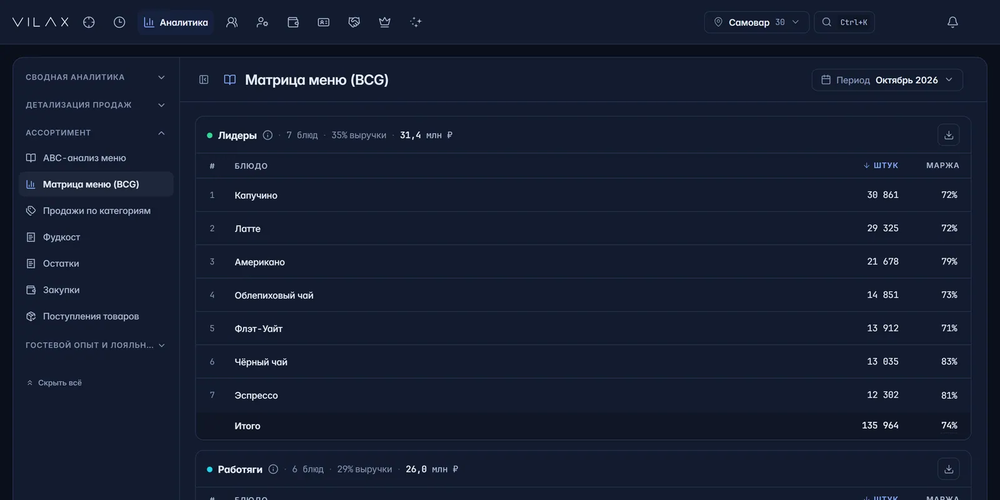
открыть экран целиком ↗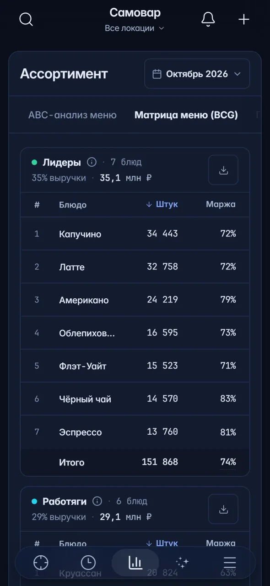
Что VILAX держит под контролем.
Всё это можно проверить на демо — на вашей кассе и ваших точках после подключения.
примерно так часто обновляется выручка — не ждёте вечернего отчёта
каждый день — сумма и сотрудник, который провёл операцию
цена за локацию одна для всех точек и снижается с ростом сети
и стандартный онбординг входит в цену
Деньги, которые раньше терялись между сменами
Каждый канал — с суммой, количеством операций и тем, кто их провёл.
- 01Удаления после пречека
- 02Приготовлено и удалено
- 03Скидки и комплименты
- 04Полные отмены заказов
- 05Возвраты чека
- 06Возвраты гостям
AI, который работает на сеть.
Координатор входит в Основу. Подключение к ChatGPT и Claude — по вашему решению.
Координатор
AI-отчёты по сети: спросите о цифрах своей сети — Координатор отвечает по вашим данным. Сводки по сети приходят в Telegram.
Ваши отчёты в ChatGPT и Claude
Если команда уже работает в ChatGPT или Claude, к ним можно подключить отчёты VILAX. Подключается только по вашему решению.
технически: MCP-коннектор, 60 инструментовОснова и четыре блока.
Основа нужна каждой локации. Блоки подключаются, когда в них есть задача: деньги, гости, команда, лояльность. Во всех блоках — более 200 экранов и отчётов.
Основа
Выручка, KPI, план-факт и рейтинг точек каждый день
- Выручка и чеки в течение дня
- Ключевые показатели сети
- План-факт по каждой точке
- Рейтинг точек: норма, внимание, риск
- Координатор — AI-отчёты, без доплаты
Финансы и контроль
Где ресторан зарабатывает и где теряет деньги
- P&L и движение денег
- Фудкост, ABC-анализ и матрица меню
- Потери по шести каналам
Гости 360
Гость от первого обращения до повторного визита
- Столы, заказы, схема зала
- Брони в одном окне
- Отзывы с карт — ранний доступ
- Aura — AI отвечает гостям — скоро
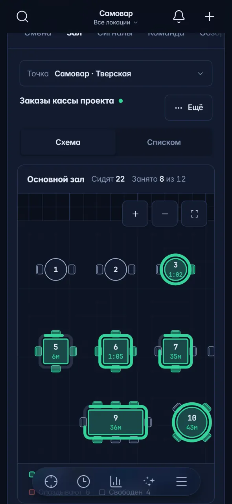
Сотрудники и Академия
Обучать команду и видеть её работу в цифрах
- Обзор команды и выручка на человека
- Программы обучения и тесты
- База знаний и стандарты
- Достижения и магазин наград
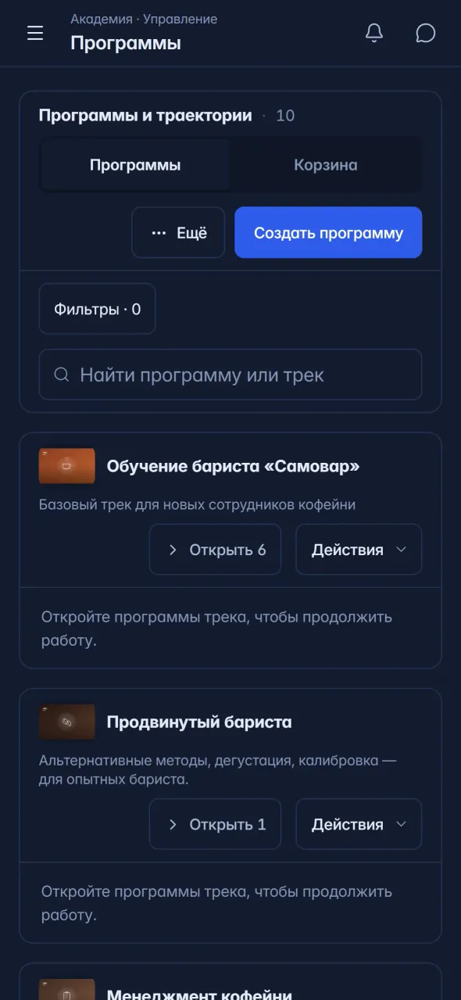
Система лояльности
Своя программа и повторные визиты
- Гости клуба: траты, визиты, последний визит
- Карта в Apple Wallet и Google Wallet, Telegram-бот
- RFM-анализ и промокоды
- Антифрод карт
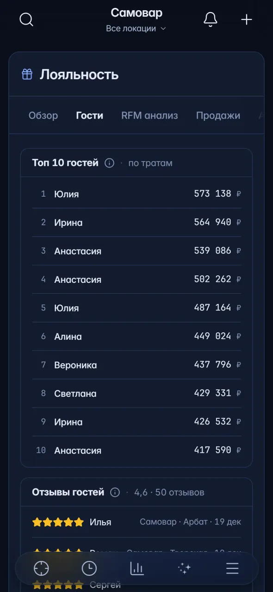
Без новой кассы и без приложения.
Подключаемся к тому, что у вас уже работает, и даём доступ ровно тем, кому нужно.
Ваша касса остаётся
В России — iiko и Quick Resto. Учёт и склад — из 1С и МойСклад, планы и справочники — из Google Таблиц.
Доступ по ролям и точкам
13 шаблонов ролей. Данные видят только те, кому вы дали доступ: управляющий — свою точку, владелец — всю сеть.
Серверы в России
Основная база российских сетей — на серверах в Москве.
Браузер и Telegram
Отдельное приложение не нужно: система работает в браузере — на компьютере и на телефоне, сводки приходят в Telegram.
Заявка
Оставляете телефон, имя, город и название заведения.
Демо
Показываем систему на демо-сети и разбираем ваши задачи.
Подключение кассы
Подключаем кассу и другие источники данных сети.
Вводная сессия
Роли и доступы, отчёты, сводки в Telegram.
Работа
Сеть работает в VILAX каждый день.
Срок зависит от кассы и числа точек — менеджер назовёт его после демо. При оплате за год стандартный онбординг входит в цену.
Основа — от 970 ₽ за локацию.
Одна цена за локацию для всех точек сети — чем больше сеть, тем она ниже. Блоки выбираете сами, расчёт с ними пришлёт менеджер.
Сколько локаций в сети?
- Помесячно или за год вперёд: за год — скидка 16,7 %, стандартный онбординг входит в цену
- Координатор (AI-отчёты по сети) входит в Основу без доплаты
- Цены без НДС, НДС 22 % начисляется сверху
Что спрашивают перед демо.
С какими кассами работает VILAX?
В России — iiko и Quick Resto. Учёт и склад подтягиваем из 1С и МойСклад, планы и справочники — из Google Таблиц.
Сколько длится подключение?
Срок зависит от кассы и числа точек — менеджер назовёт его после демо. При оплате за год стандартный онбординг входит в цену: одно подключение, доступы и вводная сессия для команды.
Кто видит данные сети?
Только те, кому вы дали доступ. Доступ настраивается ролями и локациями: управляющий точки видит свою точку, владелец — всю сеть.
Можно подключить не все блоки?
Да. Блоки выбираете сами — цена за локацию складывается из выбранных и одинакова для всех точек сети. Тариф зависит от того, сколько локаций работает в VILAX.
С какого размера сети подключается VILAX?
От 10 точек. Цена за локацию одна для всех точек сети и снижается с её ростом.
Сколько стоит VILAX?
Основа — от 970 ₽ за локацию в месяц без НДС: 2 190 ₽ для сети из 10 локаций, 1 590 ₽ — 11–25, 1 150 ₽ — 26–100, 970 ₽ — от 101 локации. Блоки «Финансы и контроль», «Гости 360», «Сотрудники и Академия» и «Лояльность» подключаются по выбору — расчёт пришлёт менеджер.
Как устроена оплата?
Помесячно или за год вперёд. За год — скидка 16,7 %, а стандартный онбординг входит в цену. Цены без НДС, НДС 22 % начисляется сверху.
Сколько стоит AI?
Координатор — AI-отчёты по сети — входит в Основу без доплаты.
Есть ли приложение?
Отдельное приложение не нужно: система работает в браузере — на компьютере и на телефоне, а сводки по сети приходят в Telegram.
Посмотрите свою сеть в VILAX.
Покажем систему на демо-данных и посчитаем стоимость под вашу сеть.